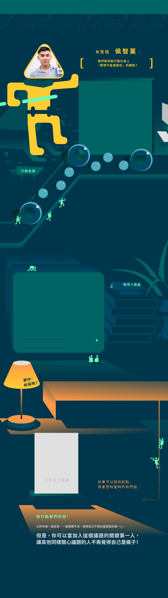
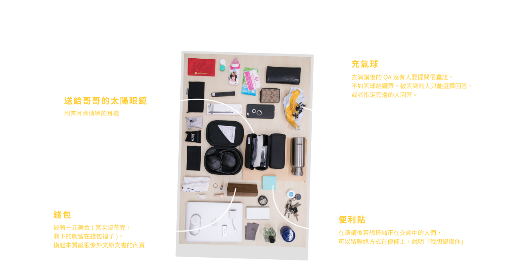
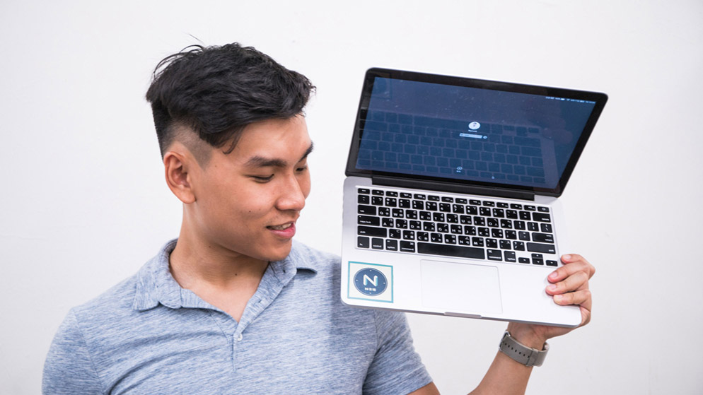

打造學生技能分享的舞台—— N 次坊
全台第一個以學生為分享者的工作坊。翻轉「用眼用耳」的聽看活動，N 次坊為學生打造專屬舞台，邀請南部願意分享自學技能的學生們，將自己一路累積的經驗和方法，傳遞給更多想要進入此領域的初學者。以學生刺激學生，不會有年齡上的隔閡，更能激勵彼此培養「學業之外的專業」。N 次坊期望打破「夢想不能當飯吃」的觀點，讓社會信任學生，也讓每個人透過自學和嘗試找到方向與使命，成為自己想成為的模樣。
點擊不同的軌跡查看行動夥伴的故事！
行動軌跡 - Action 1
發現自己喜歡、且擅長簡報的智薰，除了在課堂報告被稱讚外，也有越來越多同學想一探究竟簡報的技巧和方法。看著想學簡報的同學越來越多，智薰心想著：「何不辦一個工作坊？」，於是開了一個Google的報名表單，沒想到四小時後就額滿了。
成功辦了一次工作坊後，想著何不試著辦第二場驗證看看南部是不是確實有這樣的需求？在第二場也成功結束後，智薰想著，不如把身邊厲害的同學都找來，集合大家的熱忱和專業，讓更多人學到彼此的技能多好！
接著，和身為設計師的朋友一起開了粉專，先幫一起合作的夥伴開課，靠人脈去學校找場地。從問題出發，這一切發展成計畫，而計畫需要人，於是實踐計畫的夥伴們漸漸變成了一個組織。
行動軌跡 - Action 2
察覺到南部學生厭倦了單向演講的方式，如果換成有所互動的工作坊，是不是可以讓更多人學到東西？如此不只可以賺點小錢，還能做一些資源交換。
智薰問了天天在算工程數學的室友：「我想開一個很多種類、不同主題的工作坊，要叫什麼好？」，室友回N次方，於是就直接採用；N剛好可以代表無限變數，就像工作坊可以有無限可能。
歸功於開課期間的宣傳、賣票，因此「N次坊」的品牌漸漸被「朋友的朋友們」知道，更間接吸引了不少想著「是不是我也可以當講師」的人私訊粉專報名，雖然當時的N次坊尚未摸透開課流程，無法對外公開地找講師，卻也過程之中招募了許多潛在的團隊成員。
行動軌跡 - Action 3
漸漸地，有越來越多人發現N次方是個可以展現熱情、讓專業擴散到他人身上的舞台，因此報名當講者的角色。而想要學習的人們，也能真正地各取所需。
N次方不只靠著讓講師和學生相遇來營運，還成為各種不同專業匯聚的人才庫！讓更多不同背景的人們互相交流、激盪出火花；另外，學生講課的經驗能豐富個人的作品集和履歷，並且可以拿課後得到的回饋來修正自己的不足。
2015.11 發現問題
透過兩場的個人簡報力工作坊，發現南部的技能學習實體課程的資源缺乏問題，有需求卻沒有足夠的供給。
2015.12 團隊成立
設計師同好加入團隊，將團隊正式成立，釋出「N次坊」名稱與 Logo 視覺
2016.03 第一次外找學生講者的工作坊
自助旅行力，獲得正面的學員回饋，開始信心滿滿
2016.05 理念爭執
團隊成員對於工作坊的類型、定位產生歧異，數位成員離去
2016.10 雜學校策展
參與亞洲最大創新教育展，絕大部份過去成員皆回娘家參與幫忙。最大的收穫並不是行銷宣傳，而是大家回來一起做一件事情，共同的回憶。
2017 團隊運營轉接
將團隊整體運營交棒給新一代成員，執行「成為 Giver 的一百種方法」新專案
Q：有沒有遇到什麼轉折？
A：
在決定要開課的時候，有的講者的主題較冷門、客群較少，使人誤認為這個東西不重要。之前有個學生很擅長編織，想來教大家怎麼編出自己的小包包和名片夾，非常符合工作坊的精神，但我們團隊內有成員會覺得這種主題不能賺錢，Ｎ次坊的客群又較偏向喜歡學設計、商業，或探索相關的主題的人，所以一定會失敗。
針對這種情況大家會有小小的爭執，有人會說，能不能不要再找這些冷門的題目？畢竟N次坊才剛開始，會希望不要讓錢都燒光，但另一方面也會想，如果一直符合市場需求，是不是反而違反當時想提供一個舞台，讓學生被看到的原則和初衷？
如果講者有足夠的熱情、東西也鑽研得夠久，我們的責任應該是讓更多人知道，並體驗到講者的熱情。我們有資源，就應該要給有熱情的人一點嘗試的機會，即使失敗了也沒差，頂多付出了兩三禮拜的籌劃期，投注的場地費也才幾千塊不等。
Q：甚麼選擇相信學生？
A：
這很常被問，為什麼是學生當講者？我都會反問：「要學一個新的東西，你覺得適合找誰教你？」我不覺得找一個資深的前輩來教是適合的，因為前輩30年前的學習環境、資源跟現在完全不一樣。前輩可以教的，是看問題的方法，以及我們沒有找到的洞察點，我們完全無法否認他經驗的價值。
但是，一開始學習新的東西時，需要透過什麼方法、需要哪些資源、跟誰學、如何用現今的方法去嘗試…，是「正在學」的人最能教你。
當你正要學一件事情、正要踏進去，你需要的是一些資源、一些夥伴、一些嘗試錯誤的方法。也許會覺得正在學的人專業不夠，但他已經夠能教你怎麼試錯，因為你要做的不是一次就做到成功，要做的是如何快速犯錯，然後透過不斷積累，找出自己的形貌。所以我覺得前輩有前輩的寶貴之處，在學學生也有其寶貴之處，但是讓兩者都發揮長處的前提是，要放在正確的位子上。
Q：整個歷程中，有沒有「完了！快要過不去了」的困難？
A：
快要過不去的時候正式我們的最巔峰，也就是去年暑假。工作坊大賣、接很多案子，因此我們順勢想開很多課程、想要做很多事情。為了分擔工作份量，加上許多人想加入團隊，我們辦了一個實習計畫，很神奇地有88個人報名，不禁讓我們覺得「哇！像股票一直在漲耶，別賣別賣」。
但是要帶新來的十個實習生，讓他們有成長、有事做，必須花費很多心力培育他們，少了很多時間做N次方本身的事，加上我們沒有辦公室，只有一個co-working space，北部跟中部的實習生只能遠距工作，沒辦法實際見面，這樣一來，隱含的時間和溝通成本其實遠超出工作份量。
現在反省，覺得在爆紅的時候，不要光想著做很多事情，卻沒有考量到背後隱藏的成本。找人這件事情是正確的，可是不應該在初期就找那麼多人。
Q：這一路上有問自己甚麼問題嗎？
A：
投入的時間成本真的會值得回報嗎？人都會問自己這種很現實的問題。很多人都會覺得0-1最難，因為投入的東西不一定有回報，也不一定會得到別人的肯定，最後甚至還會失敗。
你會感受到一些社會上的不信任，但這時，你就得像傻子一樣往反方向前進，必須要問自己:這個是社會需要的嗎？或者，這只是滿足大家想要學一件事情的慾望，參加完，可以跟別人說他去過了一個工作坊，但其實他也沒有繼續學下去。這樣的情況，是我的本意嗎？
進入一些困境中的時候，我會慢慢開始問自己一些莫名其妙的問題，而經由這些自問自答，才能找到自己的願景和價值。我希望透過我們的工作坊，讓來的人不只是模仿講者，而是能夠讓他知道該怎麼做，並慢慢找出自己的模樣。
Q：用 6000 元採取的第一步行動
A：
用這筆錢，帶著團隊進行對內共識、向外參訪或學習進修，進行工作坊的策劃模式進行測試模擬，對講者的接洽與行銷宣傳修正優化。
Q：為什麼會這樣分配
A：
小筆的額外資金投資在團隊身上；大筆的額外資金與資源投資在新專案上。因為我們的講者來分享的主要動機不是為了錢，所以我會將天外來的一筆錢，投資在團隊身上，讓團隊成員了解工作坊的更多策劃形式。講者的行銷方式加強，對未來整體的業務成效會有更顯著的提升。

市場需求的矛盾

不用事事找前輩，學長姐教你試一試

爆紅後，真的撐得起你野心嗎

問出自己的願景和價值！

用 6000 元把想法變行動
A：漩渦鳴人
A：選擇沒有甚麼對與錯，只有你願不願意承擔！
猜猜看，行動夥伴隨身的包包裡有些什麼法寶？點擊揭曉
A：遊戲實戰手冊
A：趕簡報

